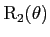
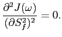

Next: The alternative extended model-free Up: Model-free analysis Previous: The extended model-free Hessian Contents Index
Because of the equation

and the form of the extended spectral density function ( ) a convolution of the model-free space occurs if the model-free parameters {
) a convolution of the model-free space occurs if the model-free parameters { ,
,  ,
,  ,
,  } are optimised rather than the parameters {
} are optimised rather than the parameters { ,
,  ,
,  ,
,  }. This convolution increases the complexity of the gradient. For completeness the first partial derivatives are presented below.
}. This convolution increases the complexity of the gradient. For completeness the first partial derivatives are presented below.
The partial derivative of ( ) with respect to the geometric parameter
) with respect to the geometric parameter
 is
is
The partial derivative of ( ) with respect to the orientational parameter
) with respect to the orientational parameter
 is
is
| (theparentequation.93) |
The partial derivative of ( ) with respect to the order parameter
) with respect to the order parameter  is
is
| (theparentequation.94) |
The partial derivative of ( ) with respect to the order parameter
) with respect to the order parameter  is
is
 |
(theparentequation.95) |
The partial derivative of ( ) with respect to the correlation time
) with respect to the correlation time  is
is
| (theparentequation.96) |
The partial derivative of ( ) with respect to the correlation time
) with respect to the correlation time  is
is
|  | (theparentequation.97) |
Edward d'Auvergne 2011-01-20